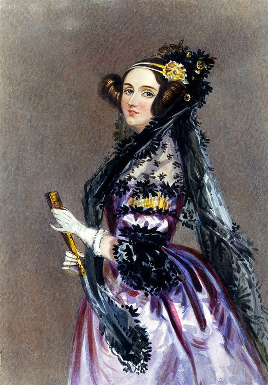
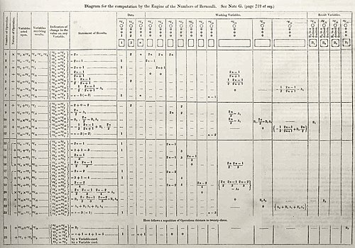

Ada Lovelace
La primera programadora de la historia
"La Máquina Analítica no tiene pretensiones de crear nada. Puede hacer cualquier cosa que sepamos ordenarle que realice."
- Ada Lovelace.
¿Quién fue Ada Lovelace?
Ada Lovelace fue una matemática y escritora británica, conocida principalmente por su trabajo en la máquina analítica de Charles Babbage. Es considerada la primera programadora de la historia, ya que escribió el primer algoritmo destinado a ser procesado por una máquina. Su visión sobre el potencial de las computadoras iba más allá de los cálculos numéricos, anticipando que podrían ser utilizadas para crear:
- Música
- Arte
- Otras formas de expresión creativa

Biografía:
Ada Augusta Byron nació en Londres en 1815. Era hija de la adinerada Annabella Milbanke y el poeta Lord Byron.
El matrimonio no duró mucho y, cuando Ada tenía un mes, su madre abandonó a su esposo. La joven Ada recibió lecciones
de matemáticas y ciencia en un intento, por parte de su madre, de erradicar la herencia de locura poética que llevaba
en los genes. Su infancia transcurrió entre tutores y estudios, lastrada por una mala salud que arrastraría a lo largo
de toda su vida.
A pesar de que en siglo XIX no era frecuente que las mujeres estudiasen ciencia, Ada tuvo la suerte de contar con grandes
maestros, como el matemático Augustus De Morgan o la astrónoma escocesa Mary Somerville. Fue precisamente Sommerville quien
le presentó al matemático Charles Babbage, con quien trabó una gran amistad y una fructífera colaboración. En 1835 Ada se
casó con el barón William King, que posteriormente se convirtió en conde de Lovelace. Durante su matrimonio siguió estudiando
matemáticas. Tras el nacimiento de su tercer y último hijo, Ada comenzó a colaborar con Babbage en la máquina analítica.
Su pasión por las matemáticas y su personalidad poco convencional no siempre fueron bien vistas en la corte. Se aficionó al
juego y en 1851 trató de crear con unos amigos un modelo matemático para acertar en las apuestas. En los últimos años de su
vida su salud se deterioró gravemente, hasta que falleció en 1852.

Trabajos Importantes:
- Algoritmo para calcular los números de Bernoulli.
- Desarrolló el concepto de bucle.
- Propuso el uso de tarjetas perforadas como método de entrada de datos e instrucciones.
- Definió el concepto de máquina universal.